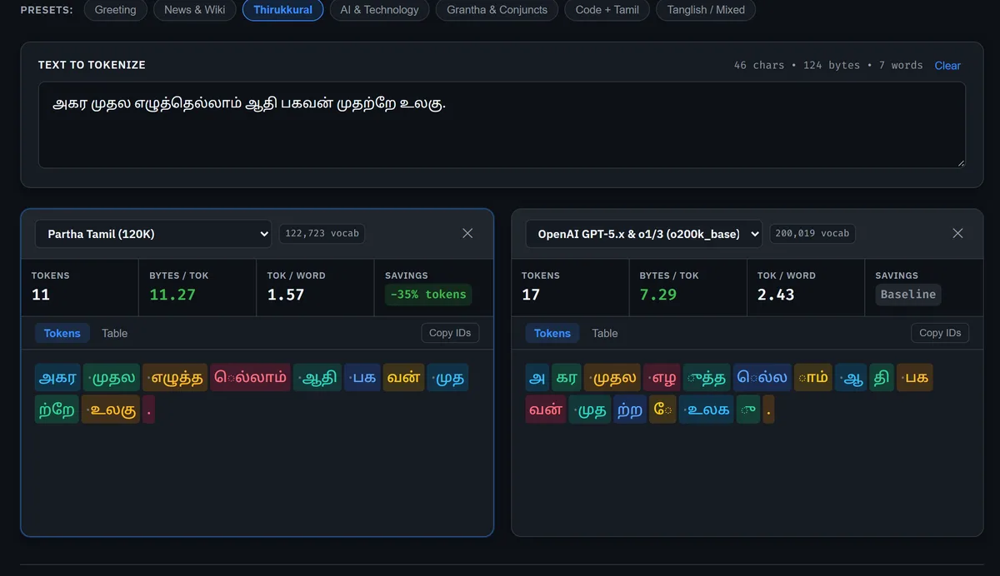

Partha
Live
-50.2% vs o200k
· 100% decode
Rust BPE tokenizer with character seeding, promotion merges, and bitset-guarded CSR merge tables. Uses 50.2% fewer tokens than OpenAI o200k and hits 0.9193 bits/byte (+36.9% vs mBERT) with 100% ByteFallback decode fidelity.
